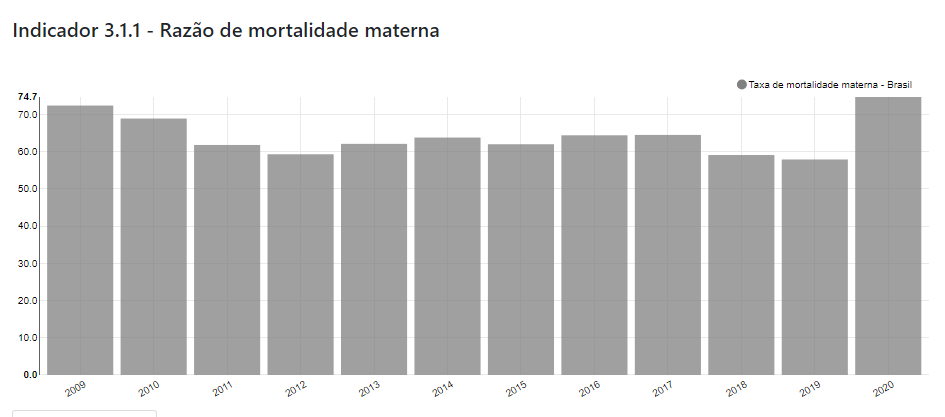

O.D.S.-3
Saúde e Bem Estar
Objetivo de Desenvolvimento Sustentável
3.9
Nações Unidas: Até 2030, reduzir substancialmente o número de mortes e doenças por produtos químicos perigosos, contaminação e poluição do ar e água do solo.
Brasil: Até 2030, meta mantida sem alteração.
Indicadores
3.9.1 - Taxa de mortalidade por poluição ambiental (externa e doméstica) do ar
3.9.2 - Taxa de mortalidade atribuída a fontes de água inseguras, saneamento inseguro e falta de higiene
3.9.3 - Taxa de mortalidade atribuída a intoxicação não intencional
